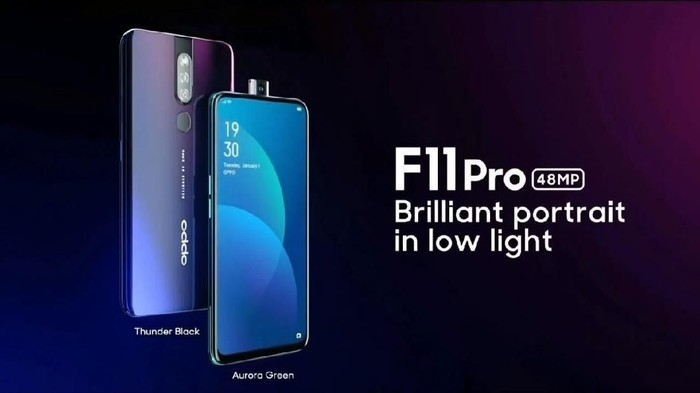
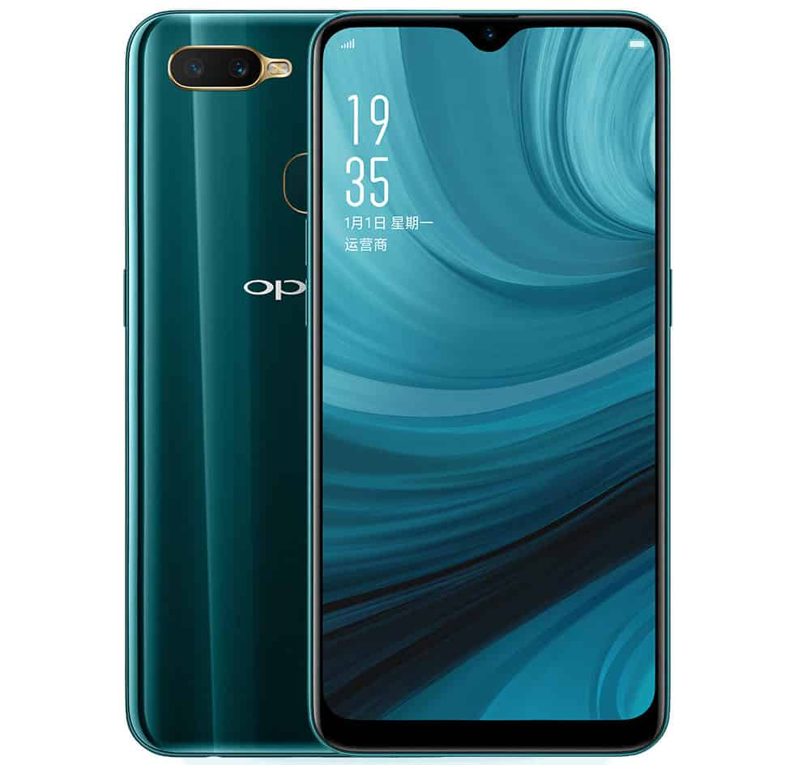

|
 |
Nama : OPPO F11 |
| Harga : Rp.4.999.000 |
Spesifikasi : Exp. release 2019, March
190g, 8.8mm thickness
Android 9.0; ColorOS 6
128GB storage, microSD card slot
OPPO F11 Pro dilengkapi kamera bagian depan 16 megapiksel (MP) dan di belakang pengaturan dual kamera 48 MP plus 5 MP. Smartphone itu dipersenjatai chipset MediaTek Helio P70 chipset serta proprietary VOOC 3.0 pengisian cepat OPPO. Qualcomm SDM845 Snapdragon 845 (10 nm)
CPU Octa-core (4x2.8 GHz Kryo 385 Gold&4x1.8 GHz Kryo 385 Silver)
GPU Adreno 630
|
|
 |
Nama : OPPO A7 |
| Harga : Rp.3.150.000 |
Spesifikasi : A7 menggunakan desain tetes air yang pertama dalam industri, didukung beragam teknologi terkini, merefleksikan tetesan air yang jatuh. Corning glass mendukung rasio layar 88.4%, memberi ketahanan terhadap goresan, serta menawarkan pengalaman memuaskan.
Lapisan anti refleksi ditambahkan pada A7 untuk meningkatkan kecerahan layar hingga 35% – tampilan menarik di setiap sudut. Juga, lampu latar daya rendah mengurangi suhu perangkat 0.5 °C sementara magnesium alloy membuat baterai mengurangi panas lebih efisien. Semua fitur ini demi menghasilkan genggaman yang lebih baik.
4230mAh Battery
Qualcomm Octa-core CPU
Powerful as always
A7 memakai prosesor octa-core dari Qualcomm agar sistem tidak terganggu saat sedang seru menonton film atau bermain game, dan multitasking menjadi lebih cepat dan lebih mudah. Memori yang ditingkatkan untuk menyimpan lebih banyak kenangan.
ColorOS 5.2
Smart and Efficient
Berbasis Android 8.1, sistem ColorOS yang ditingkatkan menyediakan pengalaman pengguna yang lebih pintar, lebih efisien dan nyaman, dengan Smart Bar yang mendukung operasi multi-tasking serta Music on Display yang menawarkan pengalaman memuaskan.
|